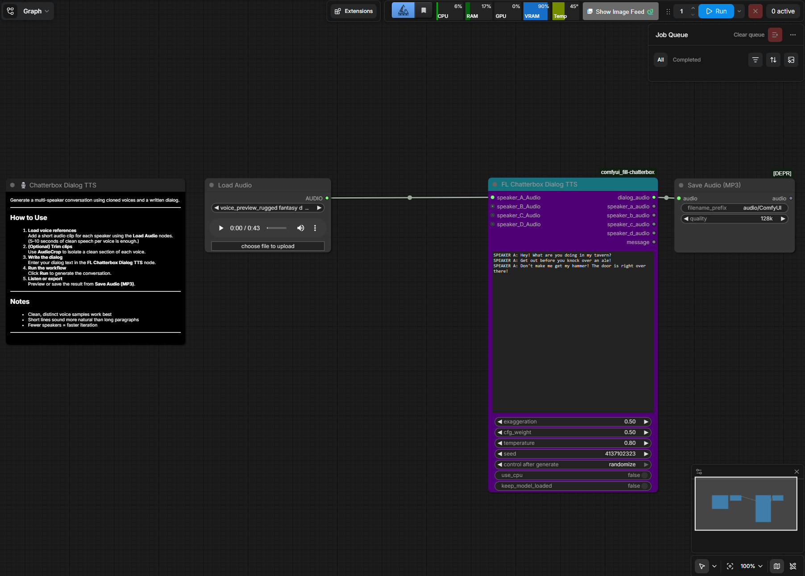

Comparing ElevenLabs, ComfyUI Chatterbox, and Pocket-TTS
After successfully experimenting with Pocket-TTS for local voice cloning, I became curious about how the state of AI speech synthesis had evolved. Rather than relying on a single tool, I decided to compare a commercial cloud service against two local, open-source solutions.
My goal wasn't simply to determine which system sounded the best. I also wanted to compare convenience, quality, and whether local AI could produce results close enough to commercial offerings for hobby projects.
I created a free ElevenLabs account to establish a quality benchmark. ElevenLabs is widely regarded as one of the industry's leading AI voice generation platforms, making it an excellent point of comparison.
Rather than writing my own prompt, I asked Claude to help design a voice prompt tailored for fantasy dialogue.
The resulting voice perfectly captured the personality I was looking for: a gruff dwarven blacksmith who sounded as though he had spent decades working at the forge.
The quality of the generated speech was remarkable. Natural pacing, expressiveness, and emotional delivery combined to create one of the most realistic AI-generated voices I have heard.
Although ElevenLabs impressed me, I still prefer running AI models locally whenever practical. Local models provide privacy, complete control over the workflow, and eliminate reliance on cloud services or usage limits.
To see how close open-source software could come, I turned to ComfyUI.
ComfyUI contains a growing collection of workflow templates contributed by the community. While these templates provide an excellent starting point, they typically require some troubleshooting and modification before they function correctly. After resolving dependency issues involving Python, PyTorch, and other required components, I successfully got the Chatterbox TTS workflow running.
Unlike my earlier Pocket-TTS experiments on a laptop CPU, ComfyUI was running on a Windows workstation equipped with a powerful GPU, providing significantly more computational performance.

Using the same voice sample, I generated cloned speech with both ComfyUI Chatterbox and my existing Pocket-TTS installation.
Both local systems produced surprisingly convincing results. While neither matched the polish of the ElevenLabs original, each captured the overall tone, cadence, and personality of the source voice remarkably well.
The experiment reinforced how rapidly open-source speech synthesis continues to improve. What once required specialized cloud services can now be performed locally on consumer hardware with impressive quality.
| System | Overall Impression |
|---|---|
| ElevenLabs | Outstanding realism with expressive delivery and excellent voice quality. |
| ComfyUI + Chatterbox | Very convincing local clone with quality approaching commercial services. |
| Pocket-TTS | Still surprisingly capable, especially considering it can operate entirely on a laptop CPU. |
Below are the three samples generated during this comparison. Visitors can listen to each version and decide for themselves how closely the local models match the commercial reference.
This project demonstrated just how quickly AI voice technology continues to advance. ElevenLabs currently delivers the highest-quality speech generation I have personally experienced, but the gap between commercial and open-source solutions continues to narrow.
For many personal projects, local voice cloning is now entirely practical. Being able to generate convincing speech without sending data to a cloud service is a significant advantage for privacy-conscious users like myself.
Looking ahead, I expect open-source speech models to continue improving at a rapid pace. As local workflows become easier to install and configure, AI voice generation will likely become another standard capability available on ordinary desktop computers.